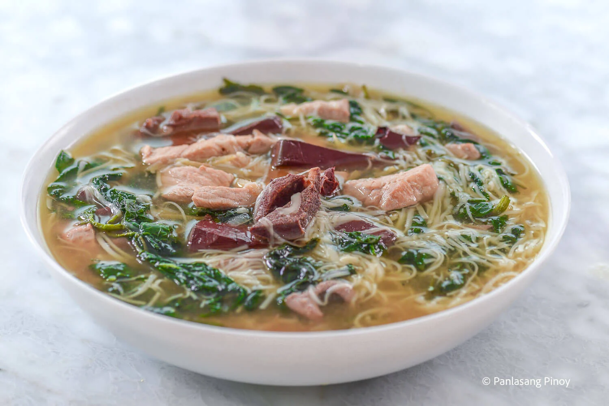
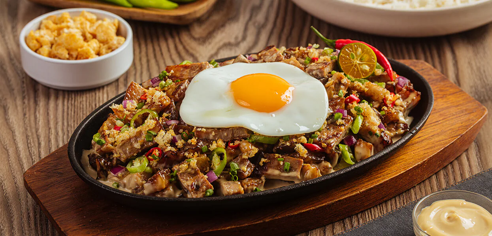
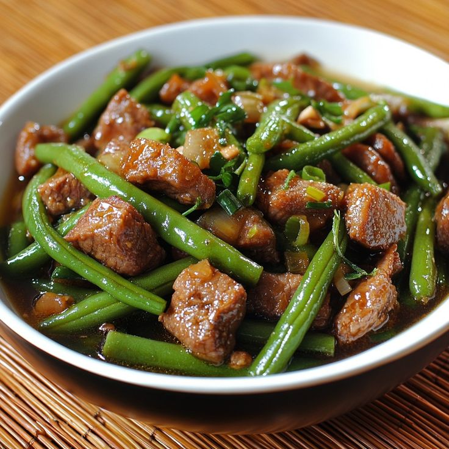

Pork

Pork Adobo
Prep : 20 mins | Cook : 1 hr & 15 mins

Traditional Filipino Lumpia
Prep : 50 mins | Cook : 30 mins

Pork Ribs Caldereta
Prep : 15 mins | Cook : 1 hr & 18 mins

Lechon Kawali
Prep : 2 hrs | Cook : 20 mins
Batchoy Tagalog
Prep : 10 mins | Cook : 45 mins

Paksiw Na Baboy
Prep : 15 mins | Cook : 1 hr & 10 mins

Pork Hamonado
Prep : 5 mins | Cook : 1 hr

Kinamatisang Baboy
Prep : 15 mins | Cook : 1 hr

Pork Kilawin
Prep : 15 mins | Cook : 30 mins

Siomai (Pork and Shrimp) with Chili Garlic Oil
Prep : 30 mins | Cook : 1 hr

Oven BBQ Spareribs
Prep : 20 mins | Cook : 3 hr & 45 mins

Pork Binagoongan sa Gata
Prep : 15 mins | Cook : 1 hr & 20 mins
Pork Sisig
Prep : 30 mins | Cook : 1 hr & 30 mins

Crispy Pata Kare Kare
Prep : 10 mins | Cook : 1 hr & 30 mins
Pork Curry Tinola
Prep : 5 mins | Cook : 1 hr
Adobong Sitaw
Prep : 10 mins | Cook : 25 mins

Pork Monggo with Crispy Galunggong
Prep : 10 mins | Cook : 50 mins